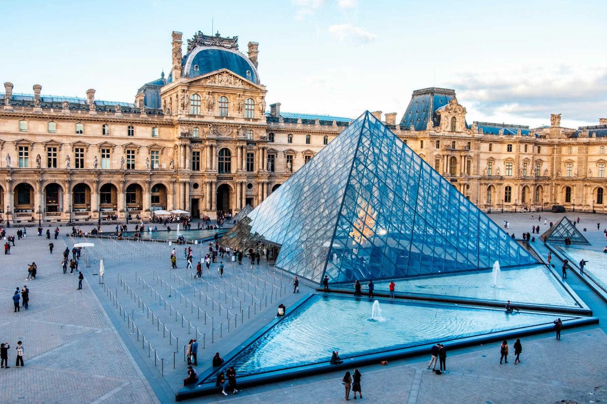

La Torre Eiffel

La Torre Eiffel es uno de los monumentos más emblemáticos del mundo y un símbolo de Francia. Ubicada en París, fue construida por Gustave Eiffel en 1889 como entrada a la Exposición Universal de París. Con una altura de 330 metros, ofrece vistas impresionantes de la ciudad de París desde sus plataformas de observación.
El Louvre
El Louvre es el museo de arte más grande y visitado del mundo. Ubicado en París, el Louvre alberga una vasta colección de arte y antigüedades que abarcan desde la antigüedad hasta el siglo XIX. Entre sus obras maestras más famosas se encuentra la Mona Lisa de Leonardo da Vinci. Además de su impresionante colección, el edificio en sí mismo es una obra maestra arquitectónica, con su icónica pirámide de vidrio como entrada principal.
La Costa Azul

La Costa Azul, o Côte d'Azur en francés, es una región costera del sureste de Francia que se extiende desde Menton, cerca de la frontera italiana, hasta Cassis. Con su clima mediterráneo, playas de arena blanca y aguas azules, la Costa Azul es un destino turístico popular. Además de sus hermosas playas, la región es conocida por sus ciudades glamurosas como Niza, Cannes y Mónaco, así como por su paisaje pintoresco, que incluye pueblos medievales encaramados en las colinas y viñedos.